Active Directory
Configuración
Comenzamos con la instalación de Active Directory para crear y gestionar nuestro propio dominio. A través de "Agregar roles y características" añadimos a nuestro único servidor el role de "Servicios de dominio de Active Directory". Se añadirán automáticamente las características necesarias, no es necesario agregar ninguna característica extra.
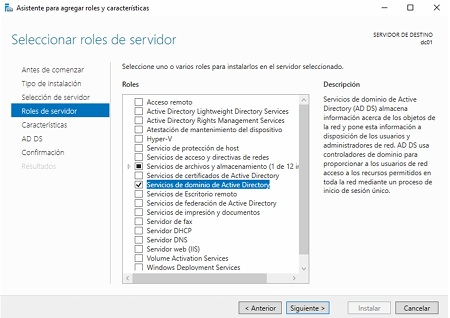
Le damos a siguiente,
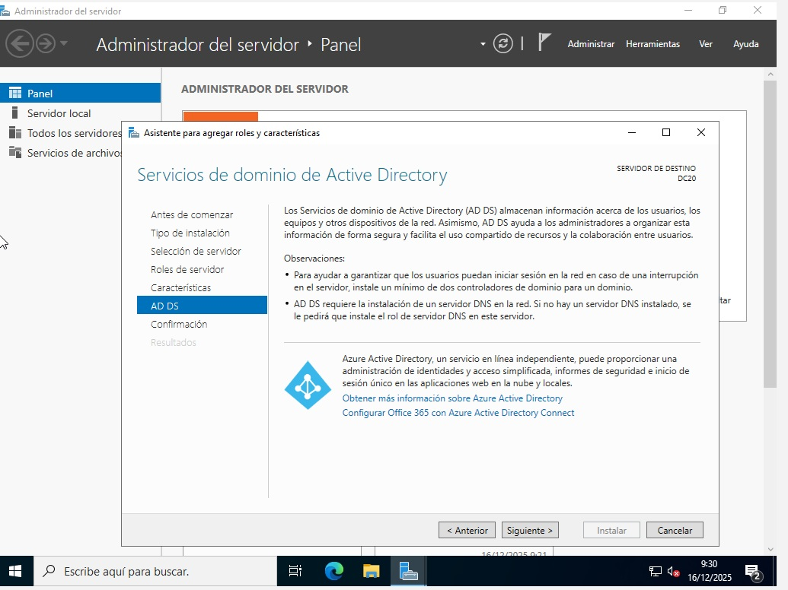
siguiente,
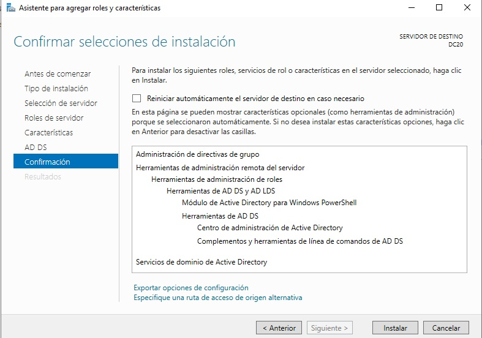
Por último pulsamos en instalar. Cuando ya esté instalado se habilitará el botón de cerrar lo pulsamos y ya tenemos el active directory,
pero todavía queda configurarlo, si nos fijamos en la parte superior derecha hay un icono de precaución, pinchamos en él.
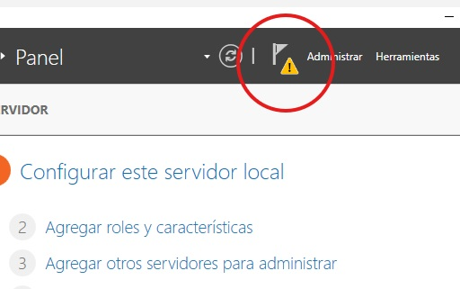
y le damos a promover este servidor a controlador de dominio.
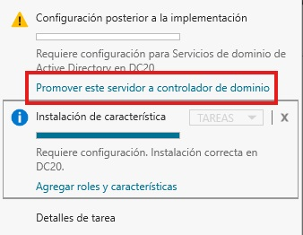
Agregamos un nuevo bosque y le damos un nombre al dominio en mi caso le he puesto int.zonocar.com pulsamos en siguiente.
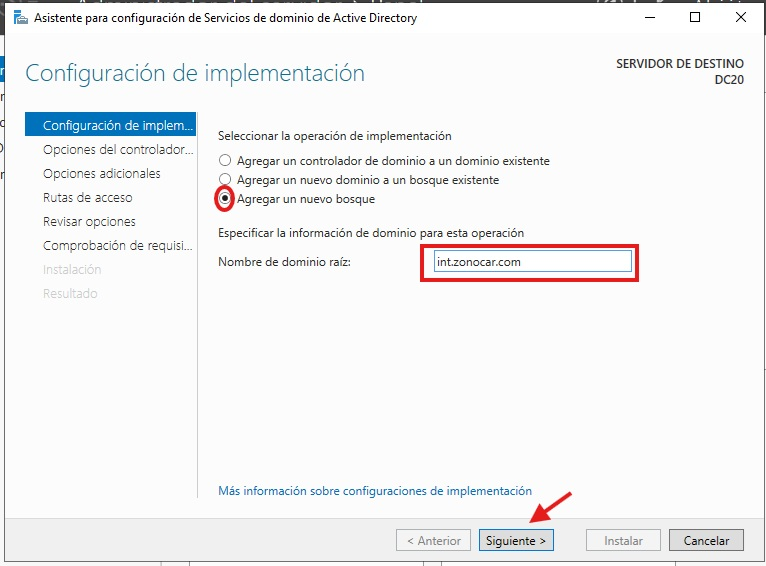
En esta pantalla debemos escribir la contraseña para la restauración en caso de problemas. En mi caso le he puesto Kinso_1978.
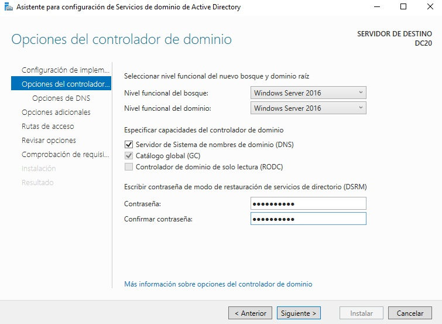
En esta ventana se nos informa que el asistente no ha sido capaz de encontrar ningún servidor DNS autoritativo Windows para nuestra zona int.zonocar.com. De haberlo encontrado nos daría la opción de crear una delegación DNS para que el AD pudiera escribir en él. En nuestro escenario no tenemos ningún DNS por lo que saltamos este paso y se descargará y configurará automáticamente un servidor DNS en este equipo.
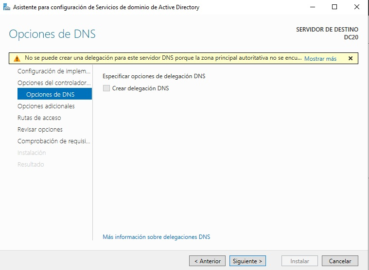
En la siguiente ventana podemos crear un "Alias" para el nombre del dominio. De esta manera podemos convertir un nombre de dominio "técnico" en algo más amigable. En nuestro caso lo cambiaremos por "netzono". Siguiente. Siguiente. Siguiente
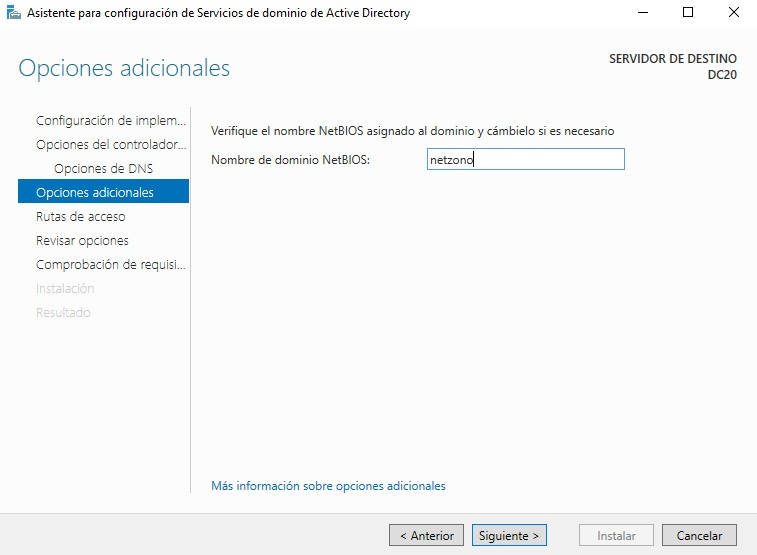
La última ventana del asistente es una comprobación de que el equipo cumple con los requisitos para ser controlador de dominio. Veremos algunos mensajes de aviso en referencia a valores predeterminados y la advertencia de que no se ha encontrado una delegación del DNS (así que asume que él será el autoritativo para ese dominio). Lo verdaderamente importante es que en la parte superior pone que sí cumple con los requisitos así podemos proceder a la instalación sin problema. Instalar
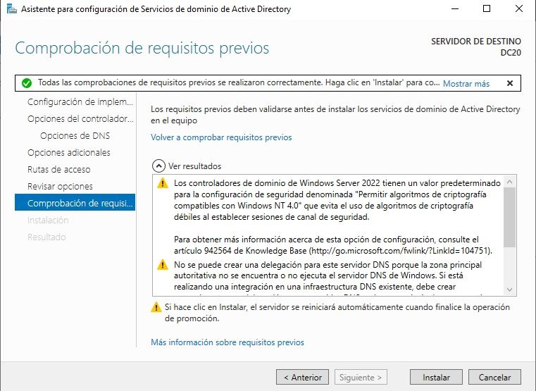
Ahora el equipo se reiniciará solo. Recordemos que ahora tenemos dos usuarios "Administradores". Uno es local y pertenece solamente al equipo "DC20". El otro es del dominio y pertenece a cualquier equipo dentro de "int.zonocar.com". Para poder distinguirlos ahora los veremos precedidos del ámbito al que pertenezcan. Los equipos que pertenecen a un AD arrancarán preferentemente contra el dominio. Si queremos forzar a que se comprueben las credenciales contra el equipo local tendremos que hacer explícito en ámbito y el usuario por ejemplo DC20\Administrador.
Una vez autenticados como administradores del dominio en "DC20" podremos comprobar en el panel que ya no pertenecemos a ningún grupo de trabajo y sí pertenecemos al dominio " int.zonocar.com ". Además también podemos ver como se ha creado un panel para el DNS y otro para en AD.
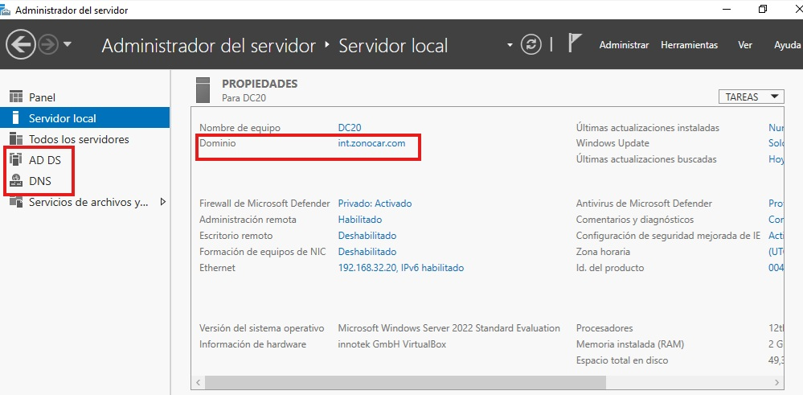